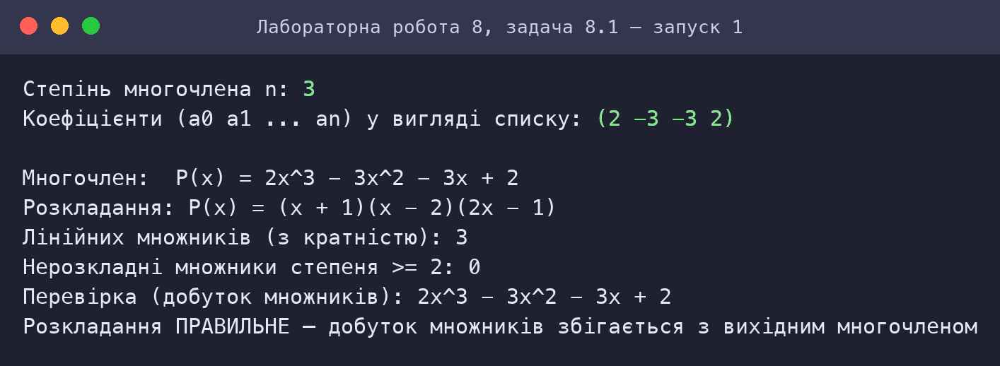
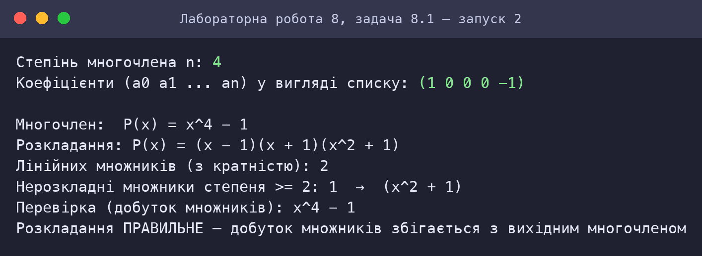
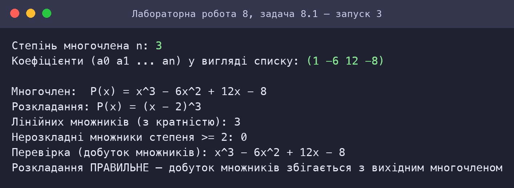
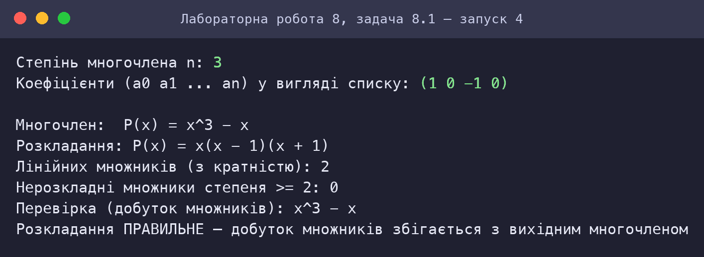
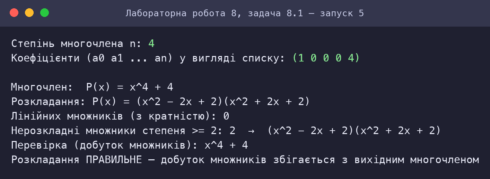
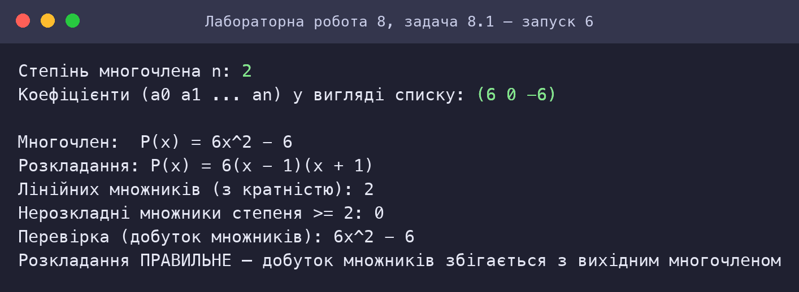
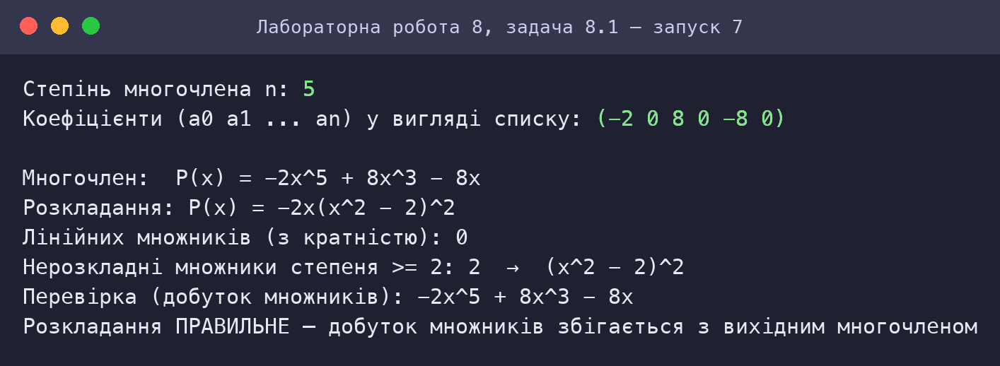
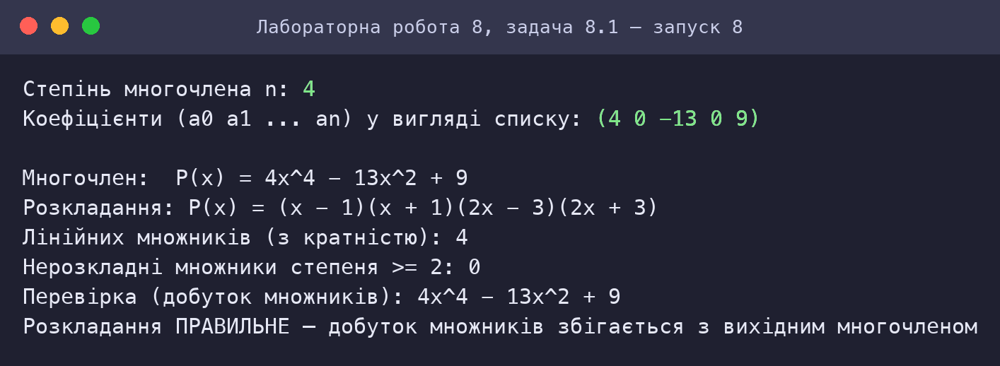

Скріншот роботи та результату
Знімки консолі відтворюють роботу програм: запуск виконано в інтерпретаторі Guile 3.0 (R5RS-сумісний); введені користувачем значення виділено зеленим. Для кожного запуску наведено умови та результат.
Задача 8.1: Розкладання многочлена на множники
Запуск 1: 2x³ − 3x² − 3x + 2

Запуск 2: x⁴ − 1

Запуск 3: (x − 2)³

Запуск 4: x³ − x (виноситься x)

Запуск 5: x⁴ + 4 (тотожність Софі Жермен)

Запуск 6: 6x² − 6 (числовий множник)

Запуск 7: −2x⁵ + 8x³ − 8x

Запуск 8: 4x⁴ − 13x² + 9
